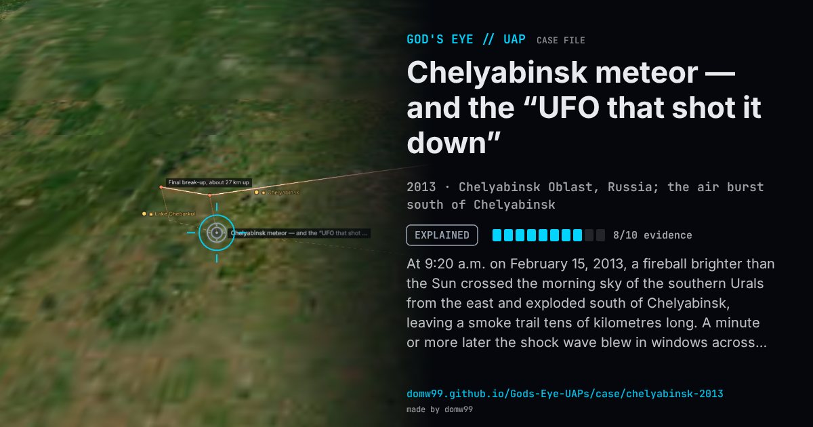

Chelyabinsk meteor — and the “UFO that shot it down”

At 9:20 a.m. on February 15, 2013, a fireball brighter than the Sun crossed the morning sky of the southern Urals from the east and exploded south of Chelyabinsk, leaving a smoke trail tens of kilometres long. A minute or more later the shock wave blew in windows across the city: 1,491 people sought medical help, most cut by glass, and more than 7,000 buildings were damaged. Because Russian drivers routinely run dashboard cameras, the event was filmed from hundreds of angles, which let scientists reconstruct its path and orbit within days. Within hours, too, clips circulated claiming that a small object had flown into the meteor and shattered it, and the UFO commentator Gennady Belimov said a UFO had shot it down; a survey by the newspaper Noviye Izvestia found barely half its readers accepted the official account. The fragments in museum collections are ordinary chondrite.
Explanation
A near-Earth asteroid about 20 m across entered at about 19 km/s at a shallow angle and exploded some 30 km up with the energy of roughly 400–500 kilotons of TNT, recorded by infrasound stations worldwide and by U.S. government sensors. Meteorites were collected across the strewn field, and a 654 kg fragment was raised from Lake Chebarkul in October 2013. Claims that videos showed a UFO destroying the meteor, and a newspaper survey in which many readers preferred a weapon test or a crashing alien ship, rest on nothing but the footage of the meteor itself.
What was seen
Shape: A fireball brighter than the Sun, leaving a long, twisted smoke trail
Witnesses: Hundreds of thousands in Chelyabinsk Oblast and neighbouring regions; filmed by hundreds of dashboard and security cameras
Duration: About 15 seconds of flight; the shock wave arrived one to three minutes later
Sources
- Wikipedia — Chelyabinsk meteor
- Christian Science Monitor — Was Chelyabinsk meteor actually a meteor? Many Russians don’t think so
Browse
- Russia
- 2010s
- Explained
- Tracked object events
- Many independent witnesses
- Video footage
- Physical traces
- Infrared or other sensor data
- Documented physiological effects
- Lights and fireballs